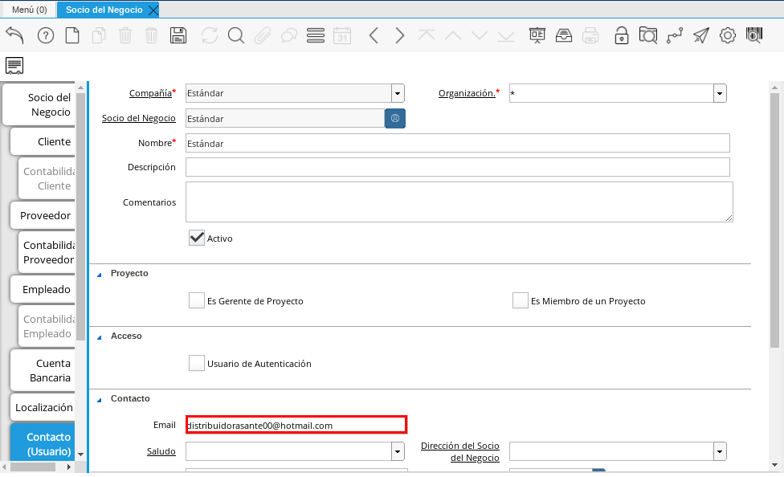

Registro de Proveedor
Para registrar un proveedor, es necesario que sea realizado el procedimiento regular explicado en el documento Registro de Socio del Negocio, elaborado por ERPyA.
Luego de culminar el procedimieto de registro de socio del negocio, seleccione la pestaña “Proveedor” que se encuentra del lado izquierdo de la ventana socio del negocio, para identificar al socio del negocio como proveedor de la empresa.
Esta pestaña le indica a ADempiere si el socio del negocio que se esta registrando es un proveedor.
Imagen 1. Pestaña Proveedor
Note
La pestaña “Proveedor” se compone de:
Un checklist “Proveedor”.
Los datos principales del socio del negocio donde los campos “Compañía”, “Organización”, “Código” y “Nombre”, vienen cargados de la ventana principal “Socio del Negocio”.
Ademas posee un grupo de campos que definen la configuración de retenciones a aplicar al socio del negocio, dichos campos se encuentran explicados en los documentos Configuración Esencial de la Retención de IVA, Configuración Esencial de la Retención de ISLR y Configuración Esencial de la Retención Municipal.

Seleccione el checklist “Proveedor” para habilitar en ADempiere el socio del negocio como proveedor de la compañía u organización.
Imagen 2. Checklist Proveedor
Warning
De no ser tildado el checklist “Proveedor”, ADempiere no tomará el socio del negocio como proveedor.

Al tildar el checklist “Proveedor” podrá apreciar un grupo de campos necesarios para la compra de productos al mismo, dichos campos no son obligatorios ya que pueden ser definidos en el documento “Orden de Compra” al momento de su elaboración.
Imagen 3. Grupo de Campos Generados por el Checklist Proveedor

El campo “Regla de Pago” establece la regla de pago definitiva para las compras al socio del negocio proveedor que se esta registrando, para este ejemplo la regla de pago utilizada es “A Crédito”.
Imagen 4. Campo Regla de Pago

El campo “Lista de Precios de Compra” establece la lista de precios definitiva para las compras al socio del negocio proveedor que se esta registrando, para este ejemplo la lista de precios utilizada es “Compra (VES)”.
Imagen 5. Campo Lista de Precios de Compra

El campo “Término Pago Orden de Compra” establece el término de pago definitivo para las compras al socio del negocio proveedor que se esta registrando, para este ejemplo el término de pago utilizado es “Crédito a 15 días”.
Imagen 6. Campo Término de Pago Orden de Compra

El campo “Esquema del Descuento en OC” establece el descuento definitivo para las compras al socio del negocio proveedor que se esta registrando, para este ejemplo el esquema de descuento utilizado es “Compras Porcentaje Simple”.
Imagen 7. Campo Esquema de Descuento en OC

El campo “Exento de (IGTF)” establece que no se aplicará el impuesto “IGTF” al socio del negocio proveedor que se esta registrando
Imagen 8. Campo Exento de (IGTF)

Pestaña Cuenta Bancaria
En esta pestaña se registran los datos bancarios del socio del negocio proveedor, con el checklist “Activo” se pueden registrar los datos de la tarjeta de crédito del socio del negocio. Así mismo, con el checklist “ACH” se pueden registrar los datos de la cuenta bancaria del socio del negocio.
Seleccione la pestaña “Cuenta Bancaria” que se encuentra ubicada del lado izquierdo de la ventana socio del negocio. Por defecto se encuentra tildado el checklist “Activo”.
Imagen 9. Pestaña Cuenta Bancaria

Checklist Activo
Seleccione en el campo “Tarjeta de Crédito”, el tipo de tarjeta de crédito que posee el socio del negocio proveedor que esta registrando.
Imagen 10. Campo Tarjeta de Crédito

Introduzca en el campo “Número”, el número de tarjeta de crédito del socio del negocio proveedor que esta registrando.
Imagen 11. Campo Número

Introduzca en el campo “Código Verificación”, el código de verificación de la tarjeta de crédito del socio del negocio proveedor que esta registrando, este código son los últimos tres números del reverso de la tarjeta.
Imagen 12. Campo Código Verificación

Introduzca en el campo “Mes de Expiración”, el mes de expiración de la tarjeta de crédito del socio del negocio proveedor que esta registrando.
Imagen 13. Campo Mes de Expiración

Introduzca el año de expiración de la tarjeta de crédito del socio del negocio proveedor que esta registrando en el campo “Año de Expiración”.
Imagen 14. Campo Año de Expiración

Introduzca el nombre de referencia de la tarjeta en el campo “Nombre”, en este campo va el nombre del titular de la tarjeta de crédito que esta registrando.
Imagen 15. Campo Nombre de Referencia de la Tarjeta

Warning
Este proceso se realiza con la finalidad de registrar la tarjeta de crédito del socio del negocio.
Checklist ACH
Para registros de cuentas bancarias, tilde el checklist “ACH”, a continuación se reflejarán los campos para el registro de la cuenta bancaria del socio del negocio proveedor.
Imagen 16. Checklist ACH

En el campo “Banco” seleccione el banco a registrar con ayuda del icono identificador (adjunto imagen).
Imagen 17. Campo Banco

A continuación visualizará la siguiente ventana con los diferentes bancos, dónde debe seleccionar el banco que posee el socio del negocio proveedor y la opción “OK” para cargar los datos a la ventana.
Imagen 18. Ventana Bancos

Seleccione en el campo “Tipo de Cuenta Bancaria”, el tipo de cuenta correspondiente a la cuenta del socio del negocio proveedor.
Imagen 19. Campo Tipo de Cuenta Bancaria

Introduzca en el campo “No. De Cuenta”, el número de cuenta del socio del negocio proveedor que esta registrando.
Imagen 20. Campo No. De Cuenta

Introduzca en el campo “Nombre”, el nombre del titular de la cuenta bancaria que esta registrando.
Imagen 21. Campo Nombre del Titular de la Cuenta

Warning
Este proceso se realiza con la finalidad de registrar la cuenta bancaria del socio del negocio proveedor.
Pestaña Localización
La localización de un socio del negocio es muy importante por diferentes motivos y más si el socio del negocio es proveedor. Ya que las transacciones de compras serán realizadas al mismo, en esta pestaña se deben registrar con exactitud los datos de la dirección del socio del negocio.
Seleccione la pestaña “Localización” que se encuentra ubicada del lado izquierdo de la ventana socio del negocio.
Imagen 22. Pestaña Localización

A continuación visualizará la siguiente ventana, dónde debe resourcesdsocio-proveedorr la dirección exacta del socio del negocio proveedor que esta registrando.
Imagen 23. Ventana de Localización

Warning
Recuerde guardar el registro de los campos cada vez que se vaya a posicionar en una pestaña de la ventana socio del negocio.
Pestaña Contacto
En esta pestaña se registran todos los datos de contacto que se tengan del socio del negocio proveedor.
Seleccione la pestaña “Contacto” que se encuentra ubicada del lado izquierdo de la ventana socio del negocio, para proceder a llenar los campos necesarios.
Imagen 24. Pestaña Contacto

Introduzca en el campo “Nombre”, el nombre del socio del negocio contacto para las transacciones entre las empresas.
Imagen 25. Campo Nombre de Contacto

Introduzca en el campo “Email”, el email del socio del negocio contacto para las transacciones entre las empresas.

Imagen 26. Campo Email
Introduzca en el campo “Teléfono”, el teléfono del socio del negocio contacto para las transacciones entre las empresas.
Imagen 27. Campo Teléfono

Note
Este procedimiento realizado aplica solo para los Socios del Negocio que cumplan el rol de Proveedor.